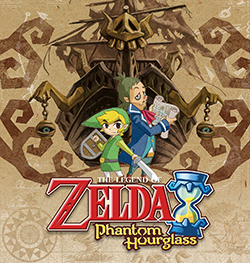

Phantom Hourglass übertrug die Wind Waker-Ästhetik auf den Nintendo DS und setzte stark auf Touchsteuerung. Das titelgebende Phantom Hourglass als Mechanik forderte temporäre Überlebensfenster in gefährlichen Räumen und sorgte für einzigartige Rätsel-Setups.
| Titel | The Legend of Zelda: Phantom Hourglass |
| Veröffentlichung | 2007 (gestaffelt) |
| Plattform | Nintendo DS |
| Entwickler | Nintendo EAD |
| Produzent | Nintendo |
| Komponist | Toru Minegishi |
Das Spiel nutzt den DS-Touchscreen vollständig: Bewegung, Kampf und Rätsel werden primär per Stylus gesteuert. Die Schiffsnavigation bleibt ein zentraler Bestandteil, kombiniert mit kleineren Insel-Dungeons. Der namensgebende Tempel (Phantom Hourglass) ist ein Zeitmechanik-Dungeon, in dem Ressourcenmanagement (Zeitfenster) und wiederkehrende Gefahren das Kerngefühl prägen. Das Design ist linearer als Open-World-Zelda, kompensiert aber durch häufige, prägnante Rätsel und Interaktion über den Touchscreen.